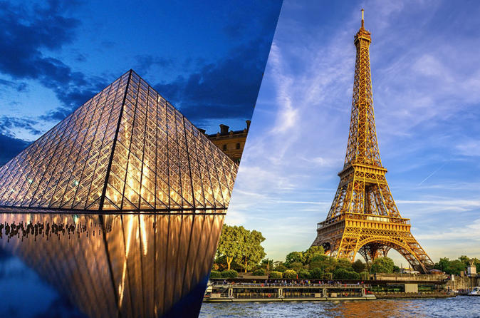
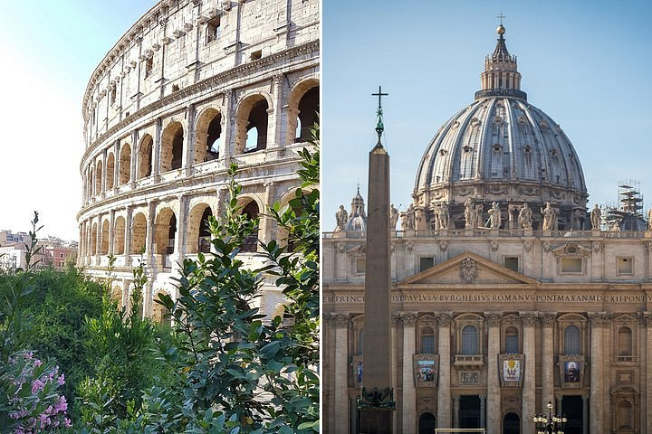
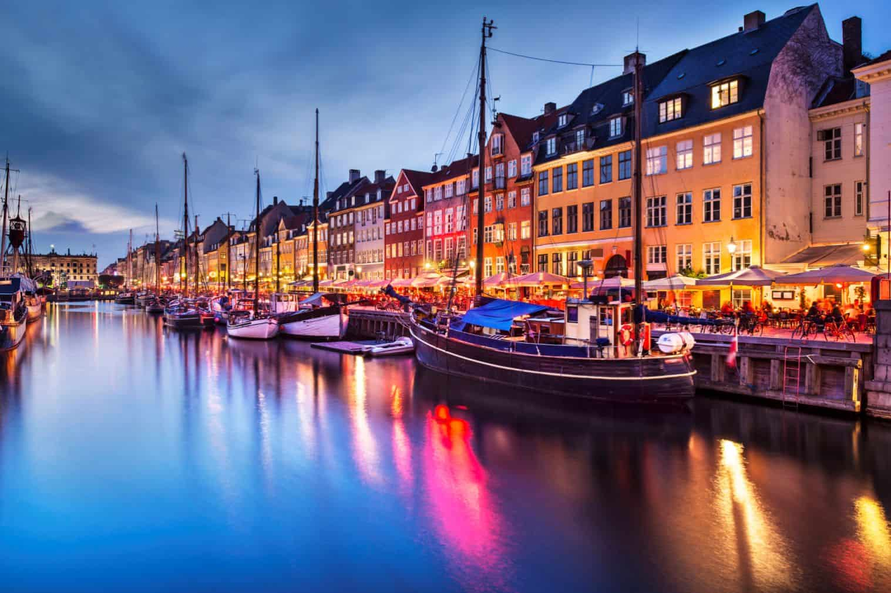

Bem-vindo a EuroTour
Sobre nós
EuroTour é um site que ajuda você a planejar sua viagem para a Europa, desde a compra das passagens, até a visita aos pontos turísticos mais importantes de cada região!
Confira alguns de nossos destinos:
Paris
Paris, a capital da França, é uma importante cidade europeia e um centro mundial de arte, moda, gastronomia e cultura. Sua paisagem urbana do século XIX é cortada por avenidas largas e pelo rio Sena. A cidade é conhecida por monumentos como a Torre Eiffel e o Museu do Louvre
Santorini

Santorini, na Grécia, está entre os mais charmosos destinos da Europa e a ilha é parada quase obrigatória de quem visita o país pela primeira vez. Famosa pelo visual cercado de casinhas brancas pontuadas por igrejas de domos azuis, Santorini encanta pelo cenário dramático formado por rochas vulcânicas em meio ao azul intenso do mar Egeu. Romântica e incrivelmente fotogênica, a Ilha de Santorini quase sempre faz parte dos roteiros de quem viaja pela Grécia.
Roma
Roma, a capital da Itália, é uma cidade cosmopolita, enorme, com quase 3.000 anos de arte, arquitetura e cultura influentes no mundo todo. Ruínas antigas como o Coliseu evocam o poder do antigo Império Romano. Além da Cidade do Vaticano, sede da Igreja Católica Romana, que tem a Basílica de São Pedro e os museus do Vaticano, que abrigam obras-primas como os afrescos da Capela Sistina de Michelângelo.
Copenhague
Copenhague, a capital e maior cidade da Dinamarca. A cidade é uma verdadeira meca cultural apresentando tudo o que você possa imaginar. Inclusive, ela é conhecida como uma das cidades com a melhor qualidade de vida. Tem como um dos destaques Nyhavn também é chamado de “o mais longo bar ao ar livre na Escandinávia“. Pois seus muitos restaurantes e cafés acolhedores são ótimos para comer com vista para o canal.